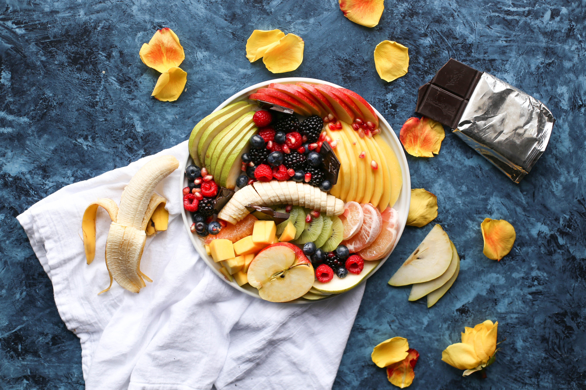

Our Ingredients
Explore a world of sweet recipes
BrowseSee how experts do things
WatchTalk with other bakers by the dozen
DiscussFresh From The Oven
Fondant that Doesn’t Taste Like Rubber
The ancient Greeks called cake πλακοῦς (plakous), which was derived from the word for "flat", πλακόεις (plakoeis). It was baked using flour mixed with eggs, milk, nuts, and honey.
publication date: 4-1-2020
The Baker Brothers: How Two Kids from Indianapolis Started a Sweet Empire
They also had a cake called "satura", which was a flat heavy cake. During the Roman period, the name for cake became "placenta" which was derived from the Greek term. A placenta was baked on a pastry base or inside a pastry case.
publication date: 3-2-2020
Perfect Red Velvet

The Greeks invented beer as a leavener, frying fritters in olive oil, and cheesecakes using goat's milk.[4] In ancient Rome, the basic bread dough was sometimes enriched with butter, eggs, and honey, which produced a sweet and cake-like baked good.
publication date: 2-3-2020
New Video Series: Chocolate-Dipped Everything
Latin poet Ovid refers to his and his brother's birthday party and cake in his first book of exile, Tristia.[6]
publication date: 1-4-2020
Desserts on a Diet
Early cakes in England were also essentially bread: the most obvious differences between a "cake" and "bread" were the round, flat shape of the cakes, and the cooking method, which turned cakes over once while cooking, while bread was left upright throughout the baking process.
publication date: 4-5-2020
Ice & Fire: Three Game of Thrones Themed Cupcake Ideas

During the Great Depression, there was a surplus of molasses and the need to provide easily made food to millions of economically depressed people in the United States.[8] One company patented a cake-bread mix to deal with this economic situation, and thereby established the first line of cake in a box. In so doing, cake, as it is known today, became a mass-produced good rather than a home- or bakery-made specialty.
publication date: 3-6-2020
Essential Cake-Decorating Tools

Later, during the post-war boom, other American companies (notably General Mills) developed this idea further, marketing cake mix on the principle of convenience, especially to housewives.
publication date: 3-7-2020
A Bouquet of Flours: Baking Gluten-Free
When sales dropped heavily in the 1950s, marketers discovered that baking cakes, once a task at which housewives could exercise skill and creativity, had become dispiriting.
publication date: 5-8-2020
Oven Ins and Outs

Early cakes in England were also essentially bread: the most obvious differences between a "cake" and "bread" were the round, flat shape of the cakes, and the cooking method, which turned cakes over once while cooking, while bread was left upright throughout the baking process.
publication date: 2-9-2020
Advanced: Making a Chrysler Building Cake
Cakes are broadly divided into several categories, based primarily on ingredients and mixing techniques.
publication date: 1-10-2020
Perfect Butter Cream

Although clear examples of the difference between cake and bread are easy to find, the precise classification has always been elusive.[5] For example, banana bread may be properly considered either a quick bread or a cake.
publication date: 5-11-2020
Introducing Fluff: A Discussion Hub About Merengues
Chocolate cakes are butter cakes, sponge cakes, or other cakes flavored with melted chocolate or cocoa powder
publication date: 3-12-2020